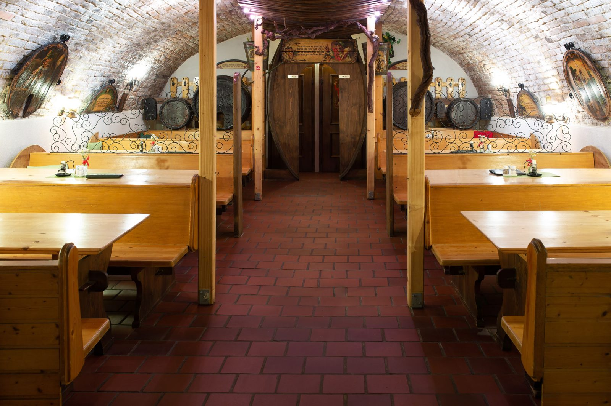

Passiert was Gutes, sprich darüber
AWC Vienna, NÖ Landesweinprämierung, Falstaff, A la Carte und GENUSS.Magazin – die Bewertungen unserer Weine seit 2020 im Überblick.
2026
AWC 2026 – International Wine Challenge · 3× Gold
- Weißburgunder 2024
- Donauveltliner 2025
- Blütenmuskateller REBE 2025 – Bio-Weingut Johannes Beer
AWC 2026 · 4× Silber
- Grüner Veltliner Stein Kremstal DAC 2025
- Rivaner Ried Steiner Braunsdorfer 2025
- Neuburger Ried Steiner Braunsdorfer 2024
- Rosé vom Zweigelt Ried Mauterner Alte Point 2025
AWC 2026 · 2× Seal of Approval
- Grüner Veltliner Goldberg Kremstal DAC Reserve 2024
- Muskateller Ried Steiner Braunsdorfer 2025
Landesweinprämierung NÖ · 4× Gold 2026
- Weißburgunder Steiner Grillenparz 2024
- Muskateller Steiner Braunsdorfer 2025
- Grüner Veltliner Ried Goldberg Kremstal DAC Reserve 2024
- Blütenmuskateller REBE 2025 – Bio-Weingut Beer
2025
Falstaff · 91 Punkte
Für unseren Grünen Veltliner Reserve Goldberg 2023: „Helles Goldgelb, silberfarbene Reflexe. Reife gelbe Apfelfrucht, Nuancen von Honigmelone und Marille, zarte tabakige Würze. Kraftvoll, komplex, süße Textur, dezente Säurestruktur, ein zugänglich opulenter Speisenbegleiter mit Honigtouch im Nachhall.“ (Peter Moser)
Falstaff · 90 Punkte
Grüner Veltliner Stein Kremstal DAC 2024: „Helles Gelbgrün, silberfarbene Reflexe. Zart tabakig unterlegte gelbe Apfelfrucht, ein Hauch von Mango, ein Hauch von Minze, floraler Touch. Mittlerer Körper, weiße Tropenfrucht, Pfirsich, feine Säure, Blütenhonig im Abgang, individueller Stil.“ (Peter Moser)
Falstaff · 89 Punkte
Riesling Kremstal DAC 2024: „Helles Gelbgrün, silberfarbene Reflexe. Floral unterlegte feine Pfirsichfrucht, ein Hauch von Limetten, mineralischer Touch. Mittlere Komplexität, zarte Fruchtsüße, dezenter Säurebogen, bereits entwickelt, gelbe Tropenfrucht im Abgang.“ (Peter Moser)
NÖ Landesweinprämierung 2025 · Gold
- Zweigelt Premium Barrique Reserve Ried Mauterner Alte Point 2022
- Zweigelt Ried Alte Point 2021
AWC 2025 · 3× Silber
- Grüner Veltliner Stein Kremstal DAC 2024
- Rivaner Steiner Grillenparz 2024
- Blütenmuskateller REBE 2024 – Bio-Weingut Johannes Beer
AWC 2025 · 5× Seal of Approval
- Riesling Kremstal DAC 2024
- Muskateller Steiner Braunsdorfer 2024
- Grüner Veltliner Goldberg Kremstal DAC Reserve 2023
- Rosé vom Zweigelt Mauterner Alte Point 2024
- Zweigelt Mauterner Alte Point Barrique Premium Reserve 2022
2024
Falstaff-Verkostungsnotizen
Riesling DAC 2023: Mittleres Goldgelb, silberfarbene Reflexe. Reife gelbe Fruchtnuancen, etwas Mango und Pfirsich, ein Hauch von Blütenhonig, mineralischer Touch. Reife Frucht, dezente Süße, Honigtouch im Abgang. (Peter Moser)
Grüner Veltliner Stein DAC 2023: Mittleres Goldgelb, silberfarbene Reflexe. Reifer gelber Apfel, zart nach Birne und Mango, Nuancen von Wiesenkräutern. Zart nach Kernobst, dezente Fruchtsüße, zarte Säurestruktur, mineralisch. (Peter Moser)
NÖ Landesweinprämierung 2024
- Grüner Veltliner Ried Goldberg DAC Reserve 2020
AWC 2024 · 6× Silber
- Weißburgunder Ried Grillenparz Kleines Holzfass 2023
- Grüner Veltliner Stein DAC 2023
- Riesling DAC 2023
- Rivaner Ried Grillenparz 2023
- Sekt Rosé
- Donauveltliner „REBE“ 2023
- Rosé vom Zweigelt Ried Alte Point 2023
- Neuburger Ried Braunsdorfer 2023
2023
AWC 2023 · 7× Silber
- Weißburgunder Ried Grillenparz Kleines Holzfass 2022
- Grüner Veltliner Stein DAC 2022
- Neuburger Ried Braunsdorfer 2022
- Muskateller Ried Braunsdorfer 2022
- Rosé vom Zweigelt Ried Alte Point 2022
- Zweigelt Barrique Reserve Ried Alte Point 2021
- Donauveltliner „REBE“ 2022
AWC 2023 · 1× Seal of Approval
- Riesling Stein DAC 2022
NÖ Landesweinprämierung 2023
- Neuburger Ried Braunsdorfer 2022
- Zweigelt Barrique Reserve Alte Point 2021
Verkostungsnotizen
Riesling Stein DAC 2022: Helles Grüngelb, silberfarbene Reflexe. Nuancen von gelbem Apfel, etwas Pfirsich und Mango, ein Hauch von Orangen und Blütenhonig. Mittlerer Körper, weißes Kernobst, dezente Fruchtsüße, mineralisch-zitronig im Abgang.
87 Falstaff-Punkte für den Grünen Veltliner Stein DAC 2022: Helles Gelbgrün, silberfarbene Reflexe. Zart nach Kamille und Apfelfrucht, ein Hauch von Kräutern, Orangenzesten klingen an. Mittlerer Körper, floraler Touch im Nachhall, bereits gut antrinkbar.
2022
AWC 2022 · Gold
- Riesling Stein DAC 2021
AWC 2022 · Silber
- Weißburgunder Ried Grillenparz Kleines Holzfass
- Grüner Veltliner Stein 2021
- Grüner Veltliner Kremstal DAC Reserve Goldberg 2019
- Neuburger Ried Braunsdorfer 2021
- Muskateller Ried Braunsdorfer 2021
- Zweigelt Barrique Premium Reserve Ried Alte Point 2020
- Sekt Rosé vom Zweigelt 2018
A la Carte · 91 Punkte
Neuburger Ried Braunsdorfer 2021, 13 %: Helle Farbe, Grapefruit, kandierte Orange, Erdnüsse, kräftiger Wein, straffe Textur, fruchtiger Abgang.
NÖ Landesweinprämierung 2022
- Neuburger Ried Braunsdorfer 2021
- Rosé vom Zweigelt 2021
GENUSS.Magazin · 3 Gläser (sehr gut)
Zweigelt Reserve Barrique 2020, Ried Alte Point, Verkostung „Rotwein liebt Fleisch“: Helles Granatrot; Himbeere, reife süßliche Weichselaromatik; offen nach Beerenmus, sehr weiches Tannin, mittelkräftige Säure, leichtfüßig und moderat in der Länge.
Grüner Veltliner Stein 2021, Verkostung „Spargelwein“: Apfelmus, gelbe Birne, pudrig, prickelnd, getrocknete gelbe Kräuter, Zesten, Verbene, Pomelo; resche Säure mit zitrischem Bogen, leichter Gerbstoff, locker, quirliger Jungspund.
Weitere Notizen
Grüner Veltliner Stein DAC 2021: Helles Gelbgrün, Silberreflexe. Angenehme Kräuterwürze, weißer Apfel, zart nach Mandarinenzesten. Saftig, engmaschig, elegant und lebendig, feine Fruchtsüße, Limetten im Nachhall.
Riesling Stein DAC 2021: Helles Gelbgrün, Silberreflexe. Noten von Mango und Ananas, gelber Pfirsich unterlegt, feiner Blütenhonig. Saftig und frisch, weißer Apfel, lebendiger Säurebogen, zitronig im Abgang, animierender Sommerwein.
2021
AWC Vienna 2021 · Silber
- Muskateller Ried Braunsdorfer 2020
- Neuburger Ried Braunsdorfer 2020
AWC Vienna 2021 · Seal of Approval
- Grüner Veltliner Stein DAC 2020
- Grüner Veltliner Goldberg DAC Reserve 2018
- Sekt Rosé 2018
- Rosé vom Zweigelt 2020
- Zweigelt Alte Point 2020
NÖ Landesweinprämierung 2021
- Riesling Stein DAC 2019
- Zweigelt Reserve Barrique Ried Alte Point 2019
A la Carte
90 Punkte für den Grünen Veltliner Stein DAC Kremstal 2020: helle Farbe, zarte Fruchtnoten, Grapefruit, Kräuter, stoffiger Wein, lebendige Struktur, engmaschiges Finish, gute Länge.
91,5 Punkte für den Grünen Veltliner Ried Goldberg Kremstal DAC Reserve 2018: jugendliche Farbe, gereifte gelbe Fruchtnoten, Papaya, kandierte Orange, gehaltvoll, balancierte weiche Textur, fruchtig-pikanter Abgang, Gewürznelke und Kumquat im Finish.
GENUSS.Magazin · 2 Gläser
Zweigelt Alte Point 2020: Hagebuttentee mit Rum; Hibiskus und Gewürznelken, deutlicher Säurebogen, abgerundete Tannine, moderate Länge mit Granatapfel im Nachhall.
Weitere Notizen
Riesling Stein DAC 2020: Mittleres Gelbgrün, Silberreflexe. Zarte Nuancen von weißem Kernobst, ein Hauch von frischen Wiesenkräutern, Anklänge von Orangenzesten. Mittlerer Körper, fruchtige Süße im Kern, zitronige Struktur, salziger Nachhall.
Grüner Veltliner Stein DAC 2020: Helles Gelbgrün, Silberreflexe. Intensive Nuancen von Minze und Melisse, weißer Apfel, dezenter Säurebogen, minziger Touch im Nachhall.
2020
Falstaff Kremstal DAC Cup 2020 · 88 Punkte
- Grüner Veltliner Kremstal DAC Stein 2019
GENUSS.Magazin 5/6 2020 · 90 Punkte / 4 Gläser „ausgezeichnet“
Neuburger Ried Braunsdorfer 2019: Vanille, junge Banane, Absinth, Heilkräuter, griffig, mürb, nussig, frisch und kühl mit schönem Druck; lang, reif mit kräuterig-frischem Ausklang.
AWC Vienna 2020
- Grüner Veltliner Stein DAC 2019
- Riesling Stein DAC 2018
- Muskateller Ried Braunsdorfer 2019
- Neuburger Ried Braunsdorfer 2019
- Weißburgunder Kleines Holzfass 2019
- Rivaner Ried Grillenparz 2019
- Rosé vom Zweigelt 2019
- Zweigelt Barrique Reserve Ried Alte Point 2018
NÖ Landesweinprämierung 2020
- Weißburgunder Kleines Holzfass 2018
- Grüner Veltliner Goldberg DAC Reserve 2017
- Zweigelt Reserve Barrique Ried Alte Point 2018
A la Carte
90 Punkte für den Grünen Veltliner Stein DAC Kremstal 2019: jugendliche Farbe, intensive Nase, Mandarine, florale Noten, Steinobst, lebendiger Trinkfluss, fruchtig-pikanter Abgang, gute Länge.
90 Punkte für den Weißburgunder Ried Grillenparz kleines Holzfass 2018: helle Farbe, nuanciertes Bukett, kandierte Orange, Birne und zarte Holzwürze, körperreich, straff, feiner Gerbstoff, Grapefruit im Abgang, gute Länge.
88 Punkte für den Zweigelt Alte Point 2018: jugendliche Farbe, zart-fruchtiges Bukett, leichte Kräuteranklänge, saftiger Wein, balancierte weiche Textur, fruchtiger Schmelz im Finish.
GENUSS.Magazin · 2 Gläser
Zweigelt Barrique Reserve Alte Point 2018: Etwas überreife Pflaume und Staubzucker; Granatapfel und vegetabile Noten, spürbare Extraktsüße, weiches Tannin, mittlere Länge.
Top-Heuriger seit 2013
Seit dem Frühjahr 2013 gehören wir zu den „TOP HEURIGEN“ und wurden 2018, 2019 und 2020 im Falstaff mit 2 von 4 Weintrauben bewertet.
